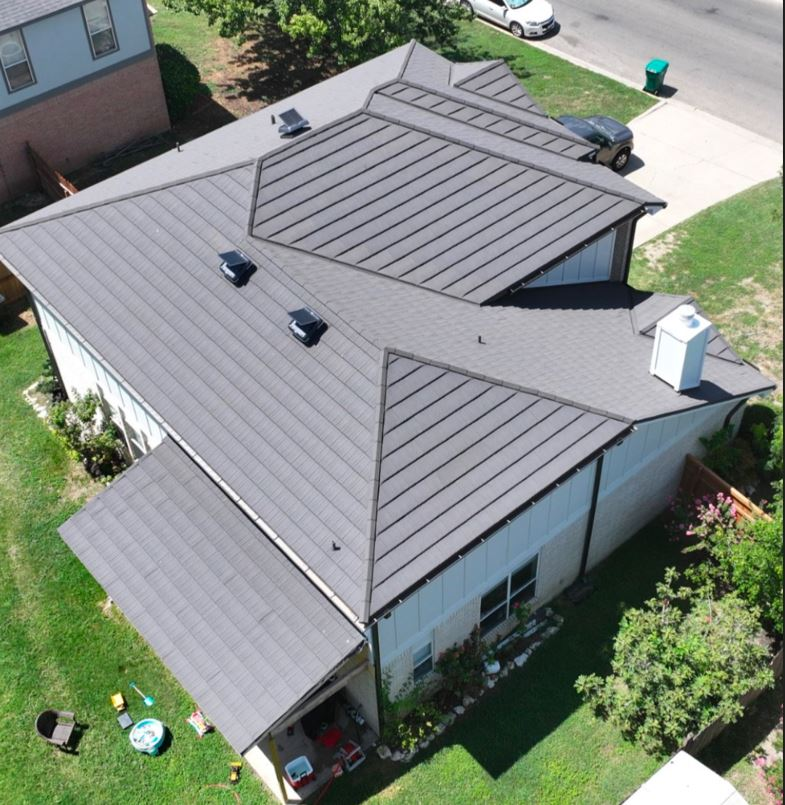

Quick answer: For most Central Texas homeowners planning to stay 15+ years, stone coated steel is the better hail-resistant roof. It carries a UL 2218 Class 4 impact rating as standard, lasts 40–60 years, and often qualifies for insurance discounts. Architectural asphalt shingles cost roughly half as much upfront but often only last 20-30 years and typically don't qualify for insurance benefits.
Why Is Hail-Resistant Roofing Such a Big Deal in Texas?
When Central Texas homeowners start comparing stone coated steel vs. shingles, the conversation usually begins with sticker shock and ends with a math problem. Hail is the number one cause of roof damage in Central Texas, and for homeowners who face hail season every spring, durability often decides the outcome.
At Verstera Roofing, we install both materials across Austin, San Antonio, and the surrounding region, and we see this choice play out on real roofs every week. This guide compares the two across the five categories that matter most in a Central Texas climate: cost, lifespan, hail resistance, energy efficiency, and appearance.
Key Takeaways for Texas Homeowners
- Upfront cost: Stone coated steel runs $10–$18 per sq. ft. installed; architectural shingles run $4.50–$8.50 per sq. ft.
- Long-term value: Over a 50-year period, stone coated steel costs less per year of service once replacement cycles and rising material costs are counted.
- Hail protection: Most stone coated steel carries a UL 2218 Class 4 rating — the highest available — which standard asphalt shingles do not match.
- Energy savings: A light, cool-rated stone coated steel roof can cut summer cooling costs by 10–20% versus dark asphalt shingles.
- Curb appeal: Available in tile, shake, slate, and shingle profiles that suit Central Texas neighborhoods.
- Decision trigger: Staying 15+ years in a hail-prone area? Stone coated steel is the stronger investment.
How Do Stone Coated Steel and Shingles Compare at a Glance?
These figures reflect 2026 national data, adjusted where noted for Central Texas conditions.
| Category | Stone Coated Steel | Architectural Asphalt Shingles |
|---|---|---|
| Installed cost per sq. ft. | $10–$18 | $4.50–$8.50 |
| Typical service life | 40–60 years | 20–30 years |
| UL 2218 hail rating | Class 4 (standard) | Class 1–2 standard; Class 3–4 at a premium |
| Wind resistance | 120–140 mph; some systems 160 mph | 60–90 mph standard; premium up to 150 mph |
| Weight per sq. ft. | 1.3–1.7 lb | 2–4 lb |
| Solar reflectance (light colors) | 0.25–0.50+ | 0.04–0.25 (cool shingles up to 0.27) |
| Manufacturer warranty | 50-year limited or lifetime; often transferable | 25–30 years; often prorated |
Central Texas pushes both materials harder than moderate climates. Intense UV, frequent large-hail events, and summers that routinely exceed 100°F accelerate wear on any roof. Labor rates, roof pitch, and tear-off costs also shift the final price, which is why two bids on the same house can differ by several thousand dollars.
Which Roof Actually Survives Texas Hail Better?
Stone coated steel. For most homeowners in Austin, San Antonio, Harker Heights, and the surrounding region, hail resistance is the defining variable in this comparison — not a minor one.
1. What Does a UL 2218 Class 4 Rating Actually Mean?
The UL 2218 test drops steel balls onto a roofing sample, striking the same spot twice and targeting seams and other weak points. Class 4 is the top rating — the material survives a 2-inch steel ball without fracturing — and it is the benchmark most Texas insurers use for premium discounts.
- Stone coated steel: Class 4 as a standard feature on most products.
- Conventional asphalt shingles: Typically Class 1–2.
- Impact-resistant shingles: Can reach Class 3–4, but are priced at the top of the asphalt range.
Important: Class 4 does not mean zero cosmetic damage. Steel panels can still dent and granules can be disturbed in a severe storm, even while the roof stays completely watertight.
2. How Does Each Roof Handle Texas Wind?
Stone coated steel panels interlock and fasten directly to the roof structure, delivering tested wind resistance of 120–140 mph, with some systems reaching 160 mph when properly installed. Standard shingles typically rate 60–90 mph, with premium products reaching 110–150 mph. In a region with frequent straight-line winds, that gap matters.
3. Is the Weight Difference Important?
Stone coated steel weighs about 1.3–1.7 lb per sq. ft. compared to 2–4 lb for asphalt. That lighter load matters on older homes, or where an over-roof installation is being considered on a structure near its design limit.

Stone Coated Steel vs. Shingles: Which Costs Less Over Time?
The sticker price on stone coated steel stops a lot of homeowners cold. The more useful question is what you pay per year of protection, not what you write on the check at installation.
Upfront Installation Cost
Stone coated steel installs at roughly $10–$18 per sq. ft. in Central Texas, with $14 per sq. ft. a solid planning figure. Architectural shingles run $4.50–$8.50 per sq. ft. On a 2,000 sq. ft. roof, that's a gap of $10,000–$20,000 depending on material grade, roof complexity, and labor.
The premium isn't arbitrary: interlocking panels, heavier-gauge steel, specialized underlayment, and skilled installation all add cost. A faster shingle install reflects a simpler product — not a better value.
Long-Term Cost Per Year of Service
- Stone coated steel: A $28,000 roof lasting 50 years ≈ $560 per year.
- Architectural shingles: A $14,000 roof replaced twice over the same period ≈ $700–$800 per year, once installation cycles, disposal fees, and rising material costs are included.
Texas homeowners have one more lever: many insurers offer premium discounts for Class 4 impact-rated roofs, sometimes hundreds of dollars a year. Ask your agent what discount applies before you finalize your material.
Which Roof Keeps a Texas Home Cooler?
Most Central Texas homeowners run their AC six to seven months a year, and the roof directly affects how hard that system works. Switching from a dark asphalt roof to a light, reflective stone coated steel roof can reduce summer cooling costs by roughly 10–20%, with about 15% a reasonable planning estimate. Homes with poor attic insulation or ventilation tend to see the higher end.
- Light stone coated steel: solar reflectance of about 0.25–0.50, with cool-rated products at the top of that range.
- Dark asphalt shingles: can reflect as little as 4% of sunlight.
The Solar Reflectance Index tells the full story. Light metal tile roofing finishes can reach an aged SRI of 85–90, while cool asphalt shingles typically land around 20–35. That gap translates directly to how much heat the roof transfers into your living space on a 105-degree July afternoon.
What Matters More Than the Material Itself?
Color. A dark stone coated steel roof reflects less than a light architectural shingle roof. The bigger advantage of many stone coated steel systems is the batten installation, which creates a ventilated air gap between the panel and the deck — passive cooling a shingle roof sitting directly on the deck can't replicate.
If energy efficiency is a priority, ask for the solar reflectance, thermal emittance, and aged Solar Reflectance Index (SRI) of any product you're quoted. "Metal" does not automatically mean "cool."
Does Stone Coated Steel Look as Good as Traditional Roofing?
Yes. Stone coated steel is engineered to replicate barrel tile, cedar shake, slate, and dimensional shingles, and its stone granule coating adds real texture that flat metal lacks. In neighborhoods where clay tile and shake-look roofs are common, it fits the look without the weight of genuine tile. Colors include earth tones, charcoal blends, terracotta, sandstone, and slate gray.
How Does Each Roof Affect Resale Value?
Stone coated steel consistently ranks among the top roofing upgrades for resale ROI in storm-prone markets. Texas buyers increasingly value a Class 4 roof as shingle-roof insurance premiums rise, and a 50-year transferable warranty is a selling point an agent can quantify. A shingle roof nearing the 20-year mark will be flagged by a buyer's inspector as an upcoming replacement cost.
Which Hail-Resistant Roof Is Right for Your Home?
Choose stone coated steel if:
- Your home is in a high-hail-frequency area and you plan to stay 15+ years.
- You want to maximize long-term ROI and avoid repeat replacements.
- Qualifying for a Class 4 insurance discount is a financial priority.
Choose architectural asphalt shingles if:
- Your budget can't absorb the higher upfront cost.
- You plan to sell within 10 years.
- Your replacement follows a single storm and the insurance payout covers shingles at current costs.
No checklist replaces a site-specific assessment. Roof pitch, attic ventilation, deck condition, and local permit requirements all affect which material performs best on your home.
Frequently Asked Questions About Hail-Resistant Roofing in Texas
What is the most hail-resistant roofing material for a Texas home?
Stone coated steel is one of the most hail-resistant residential options available. Most products carry a UL 2218 Class 4 rating as standard, while conventional shingles typically rate Class 1–2.
Does a Class 4 roof mean hail won't damage it?
No. Class 4 means the material passed the impact test without fracturing. Panels can still dent and granules can be disturbed in severe hail, even while the roof stays watertight.
Will my homeowners insurance give me a discount for a stone coated steel roof?
Many Texas insurers offer premium discounts for Class 4 impact-rated roofs — sometimes hundreds of dollars a year. Over a decade, that can meaningfully offset the higher upfront cost. Ask your agent before you choose.
How long is the warranty on stone coated steel, and is it transferable?
Stone coated steel commonly carries a 50-year limited or lifetime manufacturer warranty that is often transferable. Every Verstera Roofing installation is also backed by our TAMKO Pro Gold Certification and the Directorii $250K guarantee covering materials and workmanship.
Can stone coated steel be installed over my existing shingle roof?
Sometimes. At 1.3–1.7 lb per sq. ft. versus 2–4 lb for asphalt, it adds less structural load. Feasibility depends on roof pitch, deck condition, and permits, so we recommend a site-specific assessment.
Does a stone coated steel roof increase resale value in Texas?
Yes. It consistently ranks among the top roofing upgrades for resale ROI in storm-prone markets, and buyers value a Class 4 roof with a transferable 50-year warranty.
The Bottom Line: Is Stone Coated Steel Worth It in Central Texas?
When you factor in Central Texas hail, heat, and long-term ownership costs, this comparison isn't particularly close. Stone coated steel costs more upfront but delivers significantly more durability, better storm protection, and stronger energy performance over a 40–50 year lifespan. Asphalt shingles remain a legitimate option for the right budget and timeline.
It comes down to two questions: how long do you plan to own the home, and how much do you value never thinking about your roof again? If the answers are "a long time" and "a lot," stone coated steel is the clear choice.
A national average is a starting point — let us give you the real numbers for your roof before next hail season.